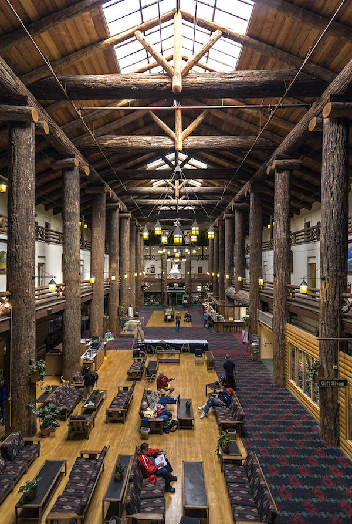

Our National Parks System
A Brief History
The United States of America has a large parks system made of diverse sections of land in every state. These areas have been designated as parks and monuments for their importance both culturally and biologically. Many visitors enjoy exploring the parks’ natural beauty by camping and hiking, spending anywhere from hours to days at a particular park. There is usually something for everyone at all the parks.
By the Act of March 1, 1872, Congress established Yellowstone National Park in the Territories of Montana and Wyoming "as a public park or pleasuring-ground for the benefit and enjoyment of the people" and placed it "under exclusive control of the Secretary of the Interior." The founding of Yellowstone National Park began a worldwide national park movement. Today more than 100 nations contain some 1,200 national parks or equivalent preserves.

In the years following the establishment of Yellowstone, the United States authorized additional national parks and monuments, many of them carved from the federal lands of the West. These, also, were administered by the Department of the Interior, while other monuments and natural and historical areas were administered by the War Department and the Forest Service of the Department of Agriculture. No single agency provided unified management of the varied federal parklands.

On August 25, 1916, President Woodrow Wilson signed the act creating the National Park Service, a new federal bureau in the Department of the Interior responsible for protecting the 35 national parks and monuments then managed by the department and those yet to be established. This "Organic Act" states that "the Service thus established shall promote and regulate the use of the Federal areas known as national parks, monuments and reservations...by such means and measures as conform to the fundamental purpose of the said parks, monuments and reservations, which purpose is to conserve the scenery and the natural and historic objects and the wild life therein and to provide for the enjoyment of the same in such manner and by such means as will leave them unimpaired for the enjoyment of future generations."
An Executive Order in 1933 transferred 56 national monuments and military sites from the Forest Service and the War Department to the National Park Service. This action was a major step in the development of today's truly national system of parks—a system that includes areas of historical as well as scenic and scientific importance. Congress declared in the General Authorities Act of 1970 "that the National Park System, which began with the establishment of Yellowstone National Park in 1872, has since grown to include superlative natural, historic, and recreation areas in every region...and that it is the purpose of this Act to include all such areas in the System...."
The National Park System of the United States now comprises more than 400 areas covering more than 84 million acres in 50 states, the District of Columbia, American Samoa, Guam, Puerto Rico, Saipan, and the Virgin Islands. These areas are of such national significance as to justify special recognition and protection in accordance with various acts of Congress.
Additions to the National Park System are now generally made through acts of Congress, and national parks can be created only through such acts. But the President has authority, under the Antiquities Act of 1906, to proclaim national monuments on lands already under federal jurisdiction. The Secretary of the Interior is usually asked by Congress for recommendations on proposed additions to the System. The Secretary is counseled by the National Park System Advisory Board, composed of private citizens, which advises on possible additions to the System and policies for its management.
The National Park Service still strives to meet its original goals, while filling many other roles as well: guardian of our diverse cultural and recreational resources; environmental advocate; partner in community revitalization, world leader in the parks and preservation community; and pioneer in the drive to protect America's open space.Today more than 20,000 National Park Service employees care for America's 400+ national parks and work with communities across the nation to help preserve local history and create close-to-home recreational opportunities.